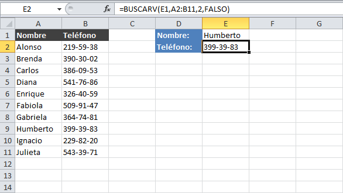

Funcion Buscarv!!
Use BUSCARV cuando necesite buscar elementos en una tabla o en un rango por fila. Por ejemplo, busque un precio de una parte de Automotive por el numero de pieza o busque un nombre de empleado basandose en su identificador de empleado.

Volver a las Funciones